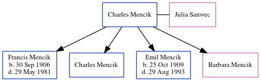

Hilda Spratt 1892 - c1894
[ Home ] | [ Calendar ] | [ Surnames Index ] | [ Errors ] | [ Family History ]The twin sister of Ida and the child of John Spratt (an agricultural labourer) and Sophia Dale, Hilda Spratt, the great-aunt of Nigel Horne, was born in Thanet, Kent, England on 7 Nov 18921 and baptised in St Nicholas-at-Wade, Kent, England on 1 Jan 1893, the same day as her twin sister Ida.
She died c. Jan 1894 in Thanet2 and was buried in St Nicholas-at-Wade on 5 Jan 1894.
Parents
- John was born on 26 Mar 1852
- Sophia was born on 15 Nov 1853
Citations
- England & Wales births 1837-2006 - Findmypast
- England & Wales deaths 1837-2007 - Findmypast
Media
Kent, Canterbury Archdeaconry baptisms 1538-1912 - GBPRS/CANT/B/96802390
England & Wales births 1837-2006 - BMD/B/1892/4/AZ/000521/271
England & Wales deaths 1837-2007 - BMD/D/1894/1/AZ/000366/364
England Births & Baptisms 1538-1975 - R_884660351
Family Tree
Map
Generated by ged2site. Last updated on Jul 3, 2024
Known Issues
Burial date (5 Jan 1894) has no citations